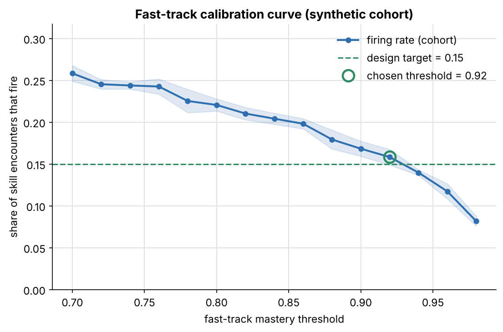
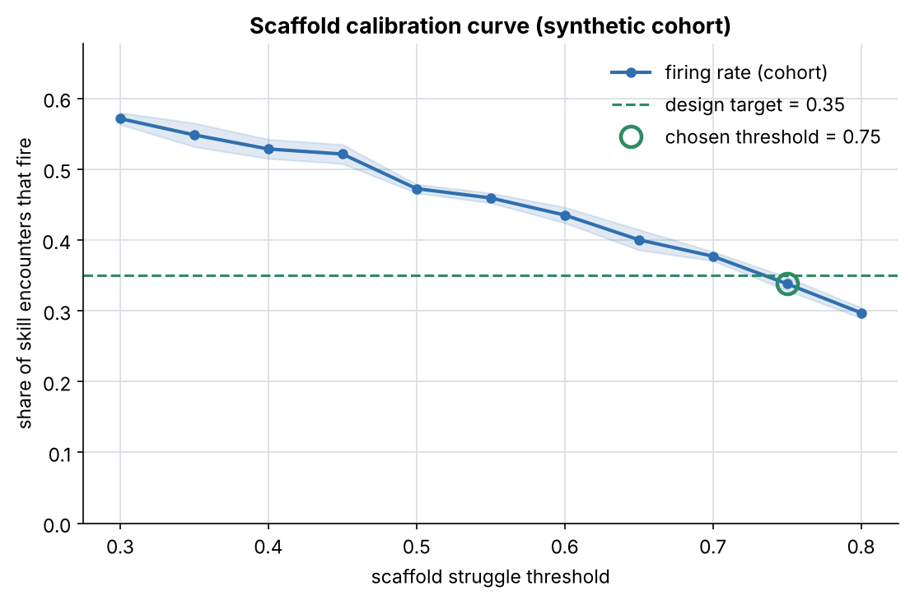
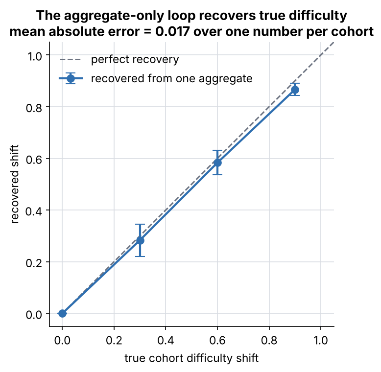
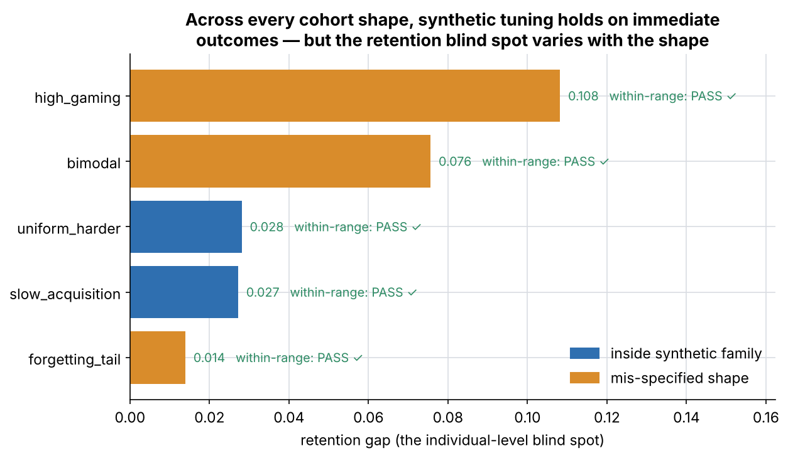
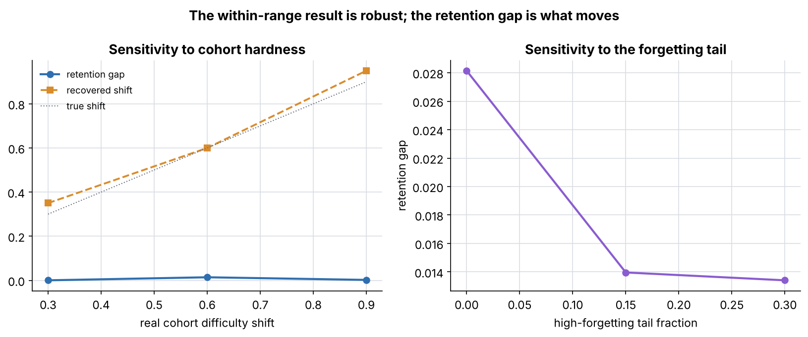
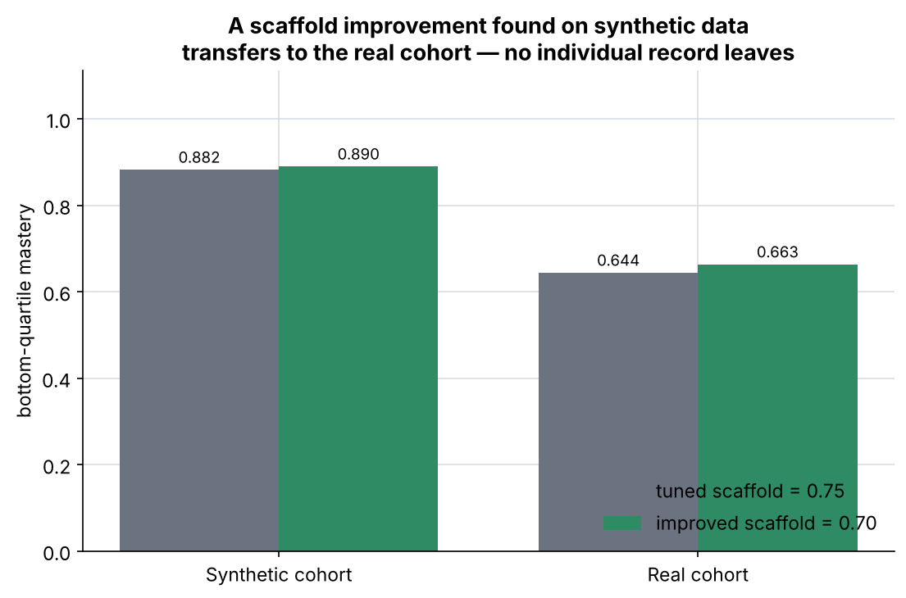
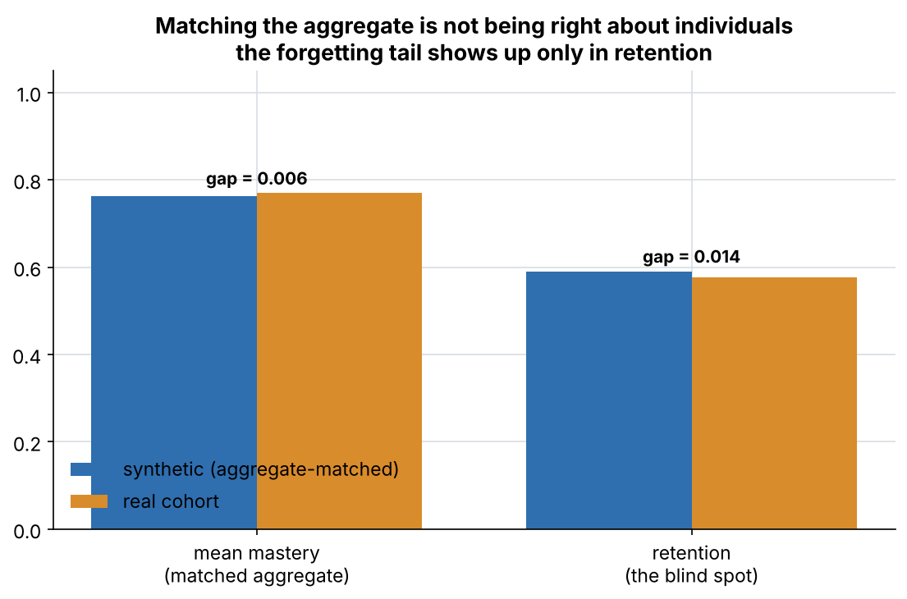

ACE is developed and calibrated on simulated middle schoolers; real student data is needed only for low-volume aggregate validation. Six literature-grounded parameters per agent; cumulative skill sequence. Generated 2026-11-12; no real student data used.
Both engines tuned to the same firing-rate targets, then both evaluated on the real
cohort over 12 resamples. Synthetic-tuned: fast-track 0.92,
scaffold 0.75. Real-tuned: 0.70 /
0.80.
| aggregate outcome | synthetic-tuned | real-tuned | Δ (± resample) | tolerance | verdict |
|---|---|---|---|---|---|
| mean_mastery | 0.743 | 0.731 | 0.012 ± 0.007 | ±0.03 | within range |
| bottom_quartile_mastery | 0.630 | 0.620 | 0.010 ± 0.016 | ±0.05 | within range |
| retention | 0.557 | 0.548 | 0.009 ± 0.006 | ±0.03 | within range |
| opportunities_per_skill | 10.832 | 10.634 | 0.198 ± 0.095 | ±1 | within range |


The aggregate-only loop recovers a cohort's true difficulty from one number, with mean absolute error 0.017 — it identifies something real, not noise.

The whole test re-run against five cohort shapes. Synthetic tuning holds on the immediate outcomes for every one; the retention blind spot varies with the shape.
| scenario | kind | within-range | recovered shift | retention gap |
|---|---|---|---|---|
| uniform_harder | in family | PASS | 0.65 | 0.028 |
| forgetting_tail | mis-specified | PASS | 0.60 | 0.014 |
| bimodal | mis-specified | PASS | 0.30 | 0.076 |
| high_gaming | mis-specified | PASS | 0.80 | 0.108 |
| slow_acquisition | in family | PASS | 0.25 | 0.027 |

The within-range result is robust; the quantity that moves is the retention gap, spanning 0.000–0.108 across the assumptions tried.

A scaffold improvement found on synthetic data lifts the real cohort's bottom quartile (+0.019, transfers: True). One aggregate number recovers the real difficulty shift (0.60 vs true 0.60).


Matching the aggregate is not being right about individuals. Tuning holds on immediate outcomes across every cohort shape, but the retention gap — invisible to the aggregate the feedback loop used — is real and largest for mis-specified cohorts. That is why the two streams validate each other rather than one replacing the other.

Grounded in Bayesian Knowledge Tracing (Corbett & Anderson 1995), the power law of practice (Newell & Rosenbloom 1981), gaming/guessing (Baker et al. 2008), help-seeking (Aleven et al. 2006), and memory decay (Pavlik & Anderson 2005).